The one we gave up on
Every good journey has a false start it learned from. This one had two.
The brief that started everything was disarmingly personal: "I am not a game developer. I do not speak the language. I want you to help me develop a 3D game that rivals professional ones." The inspiration was The Time Tunnel, a 1966 TV series where scientists fall through time into famous catastrophes and have to survive them.
The first attempt chased that literally — a Titanic narrative-survival game in a single HTML file. You'd materialise aboard the ship at 9 PM knowing the iceberg hits at 11:40, and your only weapon was foreknowledge: earn a stranger's trust with a small true prediction, spend it to pull them toward a lifeboat. It had a clever "credibility" mechanic, a retro-broadcast art style, a real countdown clock.
It was also, in the end, very disappointing. Too much game and not enough clarity — no hints, no obvious way to play, and low-poly geometry that couldn't carry the drama it promised. The verdict was one line: "very disappointing." We walked away.
The failure wasn't the history — it was the interaction. A game asks the player to figure out what to do; a film just shows them something unforgettable. So the next brief flipped the priority: "it is not much a game and more like a video." Less to learn, more to see.
A hero on a hang-glider, riding time itself
One continuous flight. History unfolding below. No menus, no fail states — just the view.
The restart brief was vivid and specific: a silent hero glides across space-time on a hang-glider, seeing the great historical events, sites and personalities from above. It should be fun and realistic — explicitly "not blockish." That last word was a quiet warning we'd spend the whole project learning to respect.
Before a line of code, we ran a structured brainstorm — the AI asking one question at a time, the human steering. Three forks decided the shape of everything.
Four roads out of the same idea
This one choice fixed the entire tech stack — and, as it turned out, the ceiling on how real it could ever look.
Browser 3D flythrough
Three.js in the browser. Actually fly it, steer a little, share it as a link — and buildable entirely in code, right there in the session. Stylised-realistic, runs anywhere.
AI-generated video
The most photoreal look, fastest to something stunning — but zero interactivity. We shelved it. Months later it would come back and win.
Unreal Engine 5
True photorealism, but a giant install and editor-driven work the AI couldn't do for a non-coder. Wrong tool for a "help me build it" collaboration.
Hybrid 3D + AI textures
3D flight with AI skyboxes. Sensible, but more moving parts than a first version needed.
Paired with a second question — how much control should the viewer have? — the answer landed on a guided tour with free-look: the glider flies a scripted path so the pacing stays cinematic, but you can move the mouse to look around. "Like a video, but alive."
From six icons to all of time — and back to ten
The scope negotiation, in three moves.
Offered a tidy six-scene grand tour, the human went bigger in the best way: "I want the entire history arc from primordial soup to the Second World War." The AI expanded it to a 54-scene itinerary across five acts — deep time, the rise of humanity, the classical world, the middle ages, the modern era — but flagged the cost honestly and proposed tiering: a dozen "hero" scenes with crowds and animation, the rest lighter atmospheric flythroughs.
Then, after an honest reckoning (next waypoint), the same ambition was disciplined down to a lean 10-scene first cut — one unforgettable beat per era, ending not at WWII but at the Wright brothers' first flight in 1903. The hang-glider hero meeting the birth of powered flight was a better ending than a blackout over a bombed city — and it sidestepped a real tonal problem we'll come to.
"What would you object to?"
Instead of "build my plan," the human asked the model to argue against it. This is where the collaboration got good.
With a 16-phase implementation plan written, the human asked a pointed question: "I want Fable 5 to implement it. What elements would Fable 5 likely object to?" — inviting the model to critique its own work before committing. The honest objections mattered more than the plan did:
Mixamo has no dinosaurs
The free animation library everyone reaches for is human-only. Dinosaurs, mammoths, pterosaurs, trilobites — the entire deep-time act — simply aren't there. The "easy" creature pipeline was a mirage.
Animated crowds are unsolved
The cheap way to draw thousands of figures can't do skeletal animation. "Ten thousand workers hauling stone," each one moving, was a research problem hiding behind one optimistic line of the plan.
"Realistic, not blocky" fights the medium
Browser + procedural + free assets gets you stylised, never photoreal. The two routes that reach realism — AI video and Unreal — had both been declined. That contradiction was going to surface eventually.
WWII as "fun" is a trap
Rendering the Blitz as a cheerful aerial flythrough is a genuine tonal and ethical risk. Better to end on human ingenuity — first flight — than to make spectacle of mass death.
Every one of these came true. Naming them early is why the project bent gracefully instead of breaking at scene 40.
A working flight — that looked like shapes
The browser game got built, and it genuinely worked. That was the problem.
The lean cut came together in code: a Vite + Three.js project, a first-person cockpit rig, a real game HUD (compass, speed and altitude dials, minimap), procedural sky, terrain and water, a continuous flight path threading all ten eras, and — the validated bet — six free, rigged, animated CC0 dinosaurs sourced and dropped into the Cretaceous scene. It flew. Free-look worked. The captions faded in on cue.
And from the glider, the world below was tan pyramids made of cones, capsule-shaped crowds, cone-shaped trees on empty green hills. Technically a success; emotionally, a slideshow of primitives. Exactly the "blockish" the brief had warned against — and exactly the ceiling the pushback had predicted.
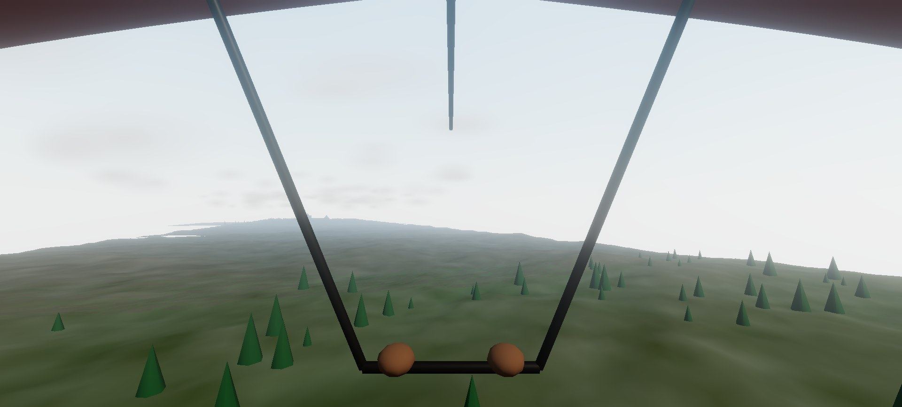
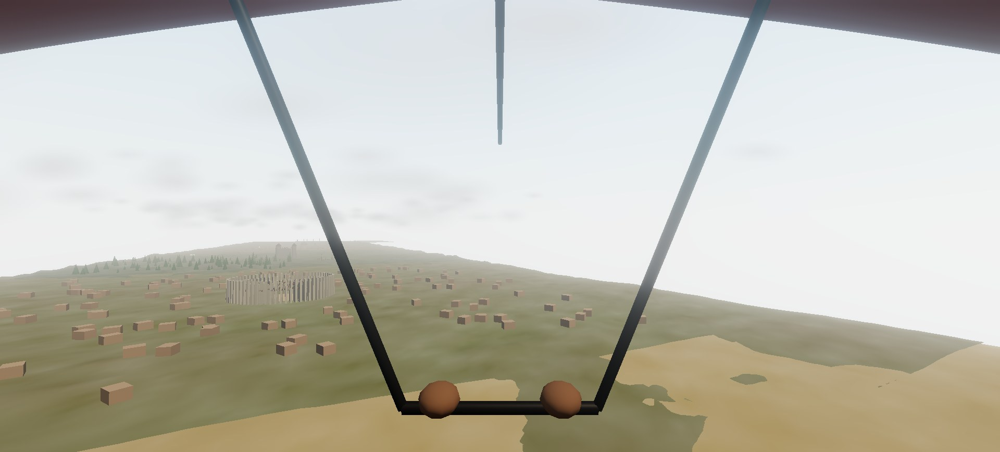
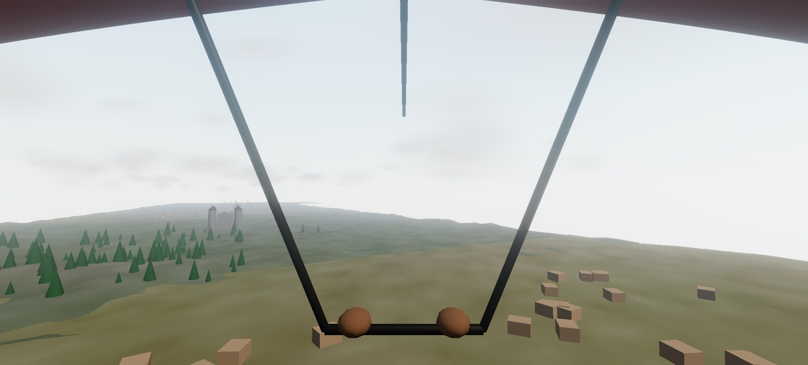
"I want photorealistic, like these."
The human dropped three reference frames on the table. They changed the project.
The references were stills from a hang-glider-over-fantasy-worlds clip — lush, cinematic, unmistakably photoreal. The instruction was blunt: "the graphics are disappointing… I want photorealistic visuals like those."
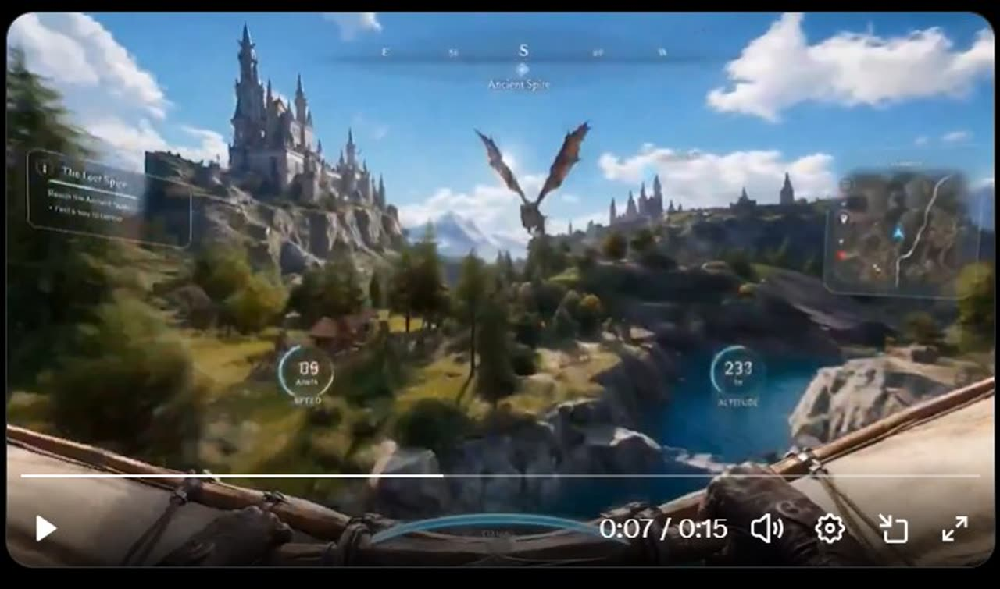
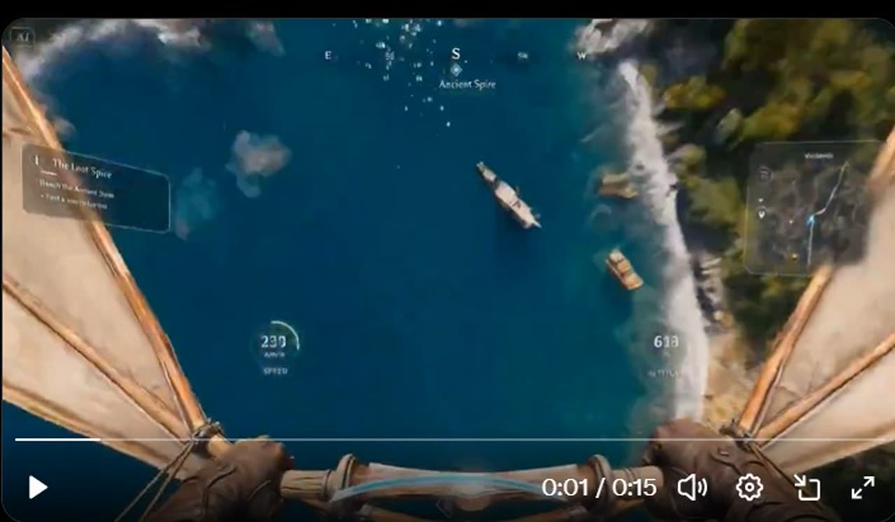
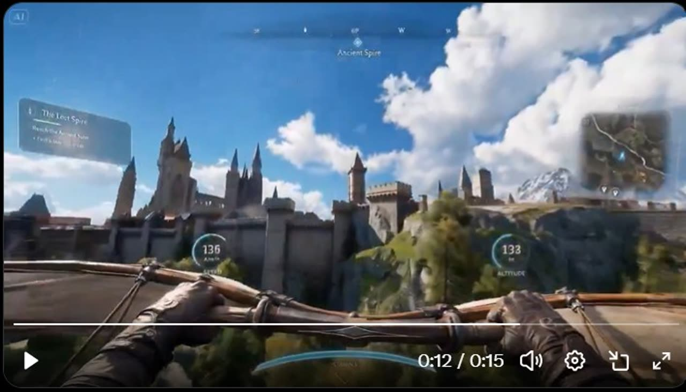
Reference frames above are stills from a video posted by @tyrtyre201 on X, supplied by the project owner as the target look. Shown here for comparison only; all rights remain with the original creator.
Here the AI had to push back on the customer, not the plan. The honest answer: no amount of code would get a real-time browser to that image — because that image was never rendered in real time. It was AI-generated video. Chasing it in Three.js meant polishing forever toward a ceiling that sat far below the target.
So the real question was never "write better graphics code." It was "which photoreal source do we use?" — and that reframing is what turned a disappointing game into a finished film.
Three roads to photoreal — and why fal.ai won
The pivotal decision of the whole project, made against a very small budget: $5.35 of credit.
Keep the browser HTML
The geometric game. Rejected as the primary deliverable for one reason: real-time browser rendering has a hard ceiling far below the reference. It survives as a playable companion — but it can never be the photoreal film.
Higgsfield
Available in-session as an MCP connector. But: pricier per output, credits sold in fixed packs that expire, and reachable only through a connector that kept disconnecting mid-session. Wrong economics and wrong reliability for a $5 budget.
fal.ai
A plain developer API. Roughly 2–3× more output per dollar, billed per successful image or second of video — no packs, no waste. Callable over plain HTTP with a key in a .env file, so every request was a visible, auditable command. No connector to drop.
Why not Higgsfield — the arithmetic
With $5.35 on the line, granularity mattered more than brand. fal.ai bills per output against a prepaid balance; Higgsfield sells credit bundles tied to plans. When your whole budget buys ~175 images or ~100 seconds of video on one platform and roughly half that on the other, the choice makes itself.
| What $1 buys | Higgsfield (pack rate) | fal.ai |
|---|---|---|
| Images | ~10 | ~25–33 (Seedream V4, $0.03 ea) |
| Seconds of video | ~8–16 | ~14–20 (Wan/Kling) |
| Billing model | Fixed packs, ~90-day expiry | Prepaid, pay-per-success |
| Access path | MCP connector (dropped mid-session) | Plain HTTP + key |
"No SDK needed" meant we called fal.ai with the same curl the terminal already had — no library to install for a one-off asset job. The rule of thumb we landed on: an SDK is a loan you take when an app will call an API for years; for a scripted batch you'll run once, plain HTTP is the lower rung of the ladder. The whole collaboration kept doing this — building and explaining the why.
Density engineering & the cheap-first pipeline
The method that turned $4 into ten packed, moving historical scenes.
Left to themselves, image models produce beautiful empty landscapes — a lone dinosaur on a vast plain — because "a T. rex in a field" is easier to draw than three hundred of them. The human named this failure mode before we hit it: "populate every scene… herds and herds of dinosaurs, a packed Colosseum. Otherwise it's just a video of greenery." So density had to be engineered into every stage, not hoped for.
The method, in four moves
1 · A population spec per era. Every prompt carried a counted, layered inventory — "hundreds of sauropods stretching to the horizon, dozens of triceratops in the foreground, a T. rex hunting at mid-distance, the sky full of pterosaurs" — because models respond to numbers and depth, not to the word "many."
2 · Keyframe first, cheaply. Each scene began as a single still image from Seedream V4 (three cents an image). Composition wrong? Retry the image, not the expensive video.
3 · A density gate. No still advanced to animation until it was genuinely full. This is where the human's eye ran the show — the first dinosaur frame came back with a suspiciously tidy single-file column, and the note was exact: "add some randomness and at least 5% more animals."
4 · Then, and only then, animate. The approved still was fed to Kling 2.5 Turbo Pro — an image-to-video model — with a written motion direction, producing a 5-second clip at $0.35 each.
Seedream V4 (text-to-image, ~$0.03) drew and re-drew every keyframe until the density gate passed; Kling 2.5 Turbo Pro (image-to-video, ~$0.35 / 5s) brought each approved keyframe to life. Both were called on fal.ai over plain HTTP. Wan 2.5 was evaluated as a cheaper video option ($0.05/s) but Kling won on motion quality.
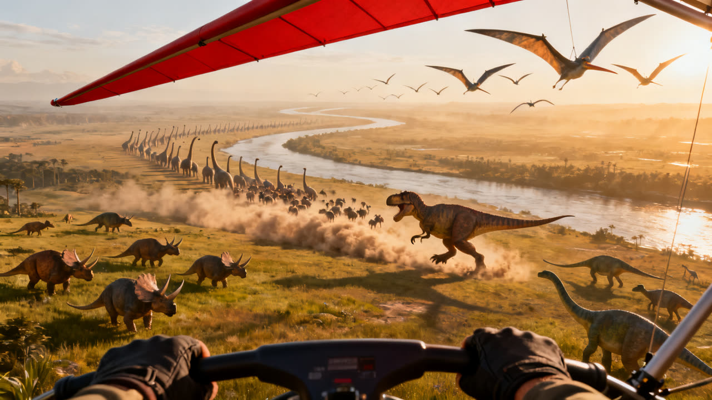
Too orderly, too sparse — a single tidy column.
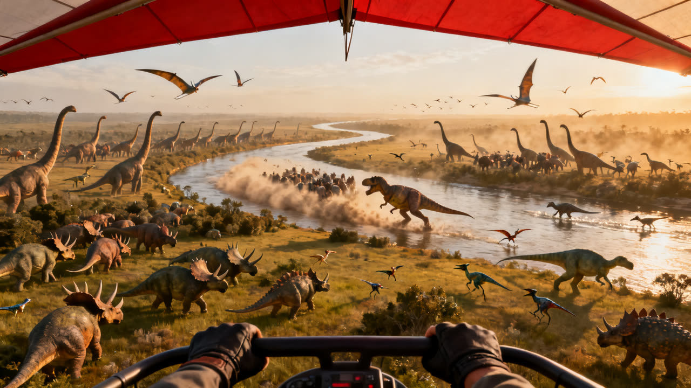
Chaotic herds on both banks, ~2× the density. Approved.
Wrestling the model into history
Photoreal models are confidently anachronistic. Giza came back with pyramid workers in modern clothes and — despite an explicit "no burning buildings" — a village on fire, because the model kept turning "cooking smoke" into flames. The fix was a genuine prompt-craft insight: mentioning "no flames" plants the very token you're trying to avoid. The winning move was to remove every fire and smoke word from the prompt entirely and let the village simply be quiet.
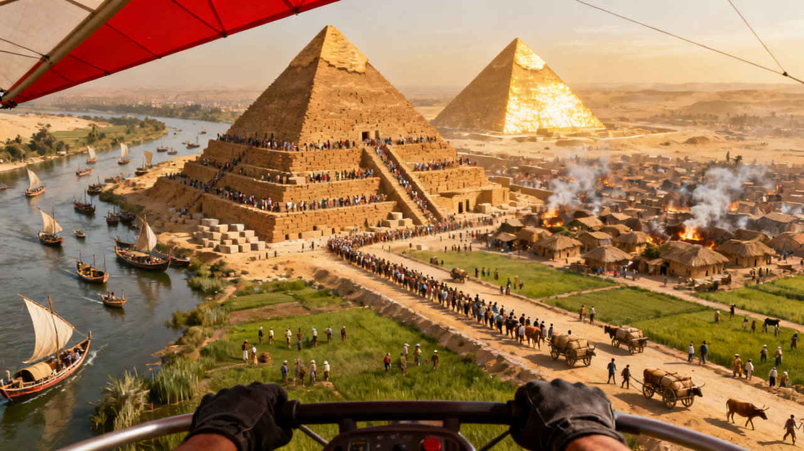
Modern dress, huts ablaze — from a prompt that asked for neither.
Linen kilts, sledge crews, a clean village — after deleting the fire words.
Kitty Hawk had the opposite bug: the Wright Flyer kept fusing to the glider's own cables, dangling from us like a toy. An explicit "the aircraft flies entirely on its own, nothing attached to the glider" set it free.
Assembly, and three rounds of "not quite"
The film was stitched with free tools — and then made better by the human refusing to settle.
All ten clips animated on the first try, so the entire retake budget went unspent. Assembly was free and local: ffmpeg laid era captions and instrument-style HUD pills over each clip, added a title card and a closing "The sky belongs to everyone," and generated a procedural wind soundtrack from filtered noise. But the first cut wasn't right, and each fix came from a specific human note:
"Legacy player can't play it."
ffmpeg had quietly encoded a professional 4:4:4 colour format consumer players don't support. Re-encoded to standard yuv420p — plays everywhere.
"I said smooth transitions."
White flash-cuts read as a slideshow. Because every clip glides forward at the same pace, a 1.2-second moving dissolve reads as one continuous flight through time.
"The gladiators are static."
Tiny figures + late prompt position = a photograph. Re-animated with the duel named first in the prompt — and Rome came alive.
Each was diagnosed openly (why it happened, options, cost), fixed for cents, and slotted straight back into the assembly. That loop — human notices, AI diagnoses and fixes, human judges — ran until there was nothing left to flag.
Ten eras. One flight. Forty-five seconds.
Primordial ocean to the birth of flight — the thing all the forks were for.
The ten approved keyframes — every one gate-checked for density before a frame of video was paid for:
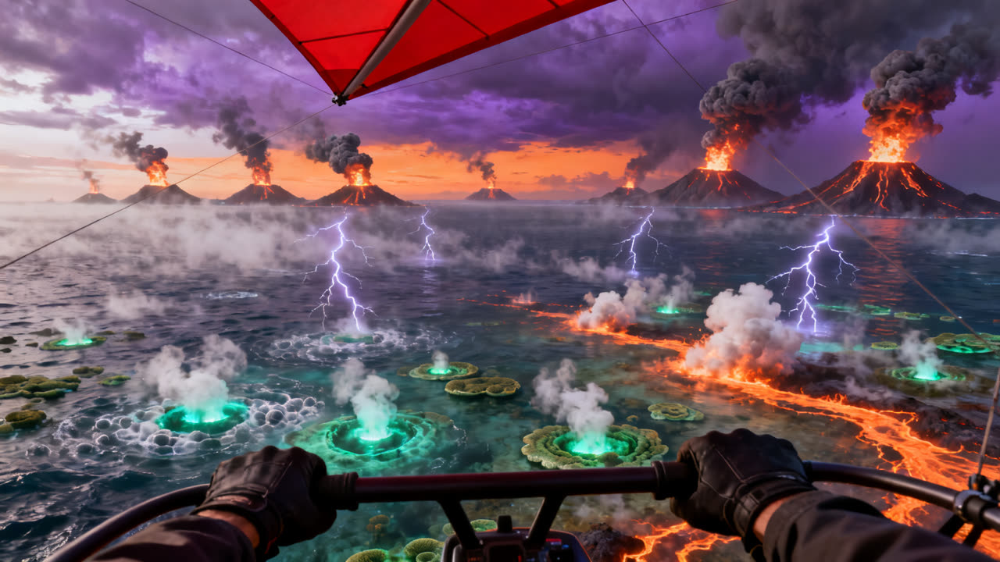
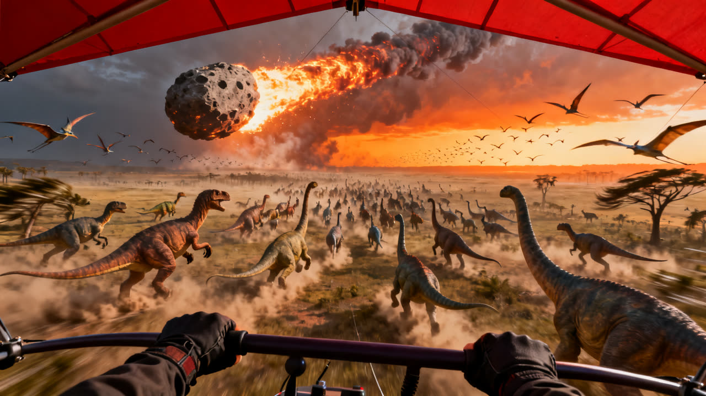
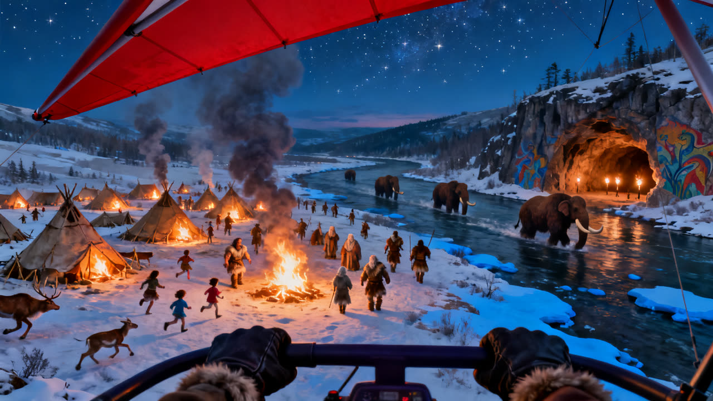
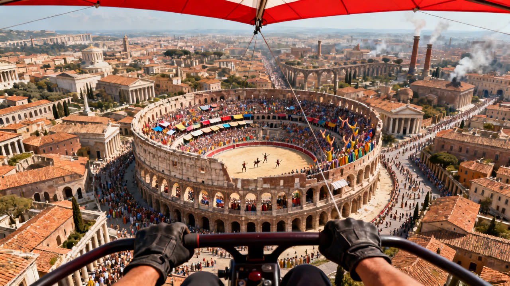
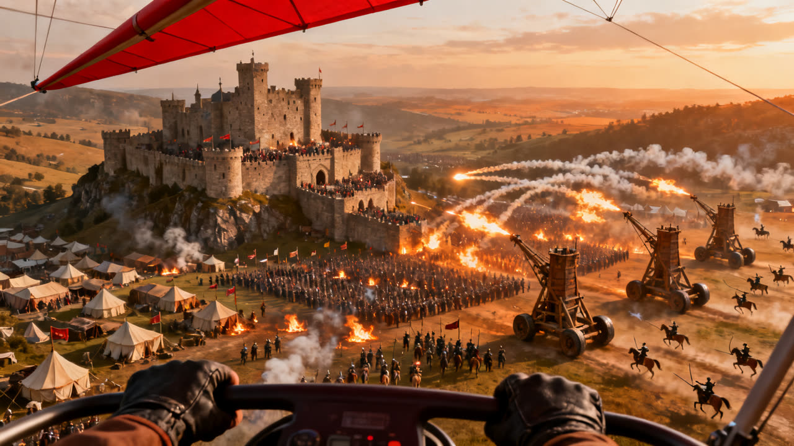
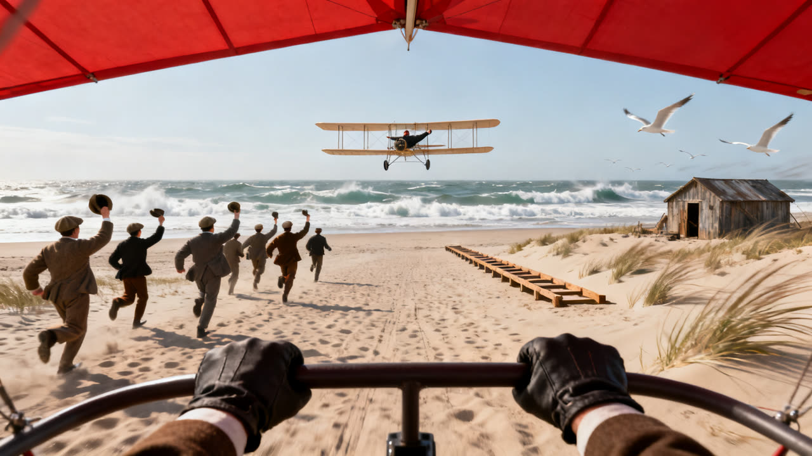
Who did what — a collaboration, not a vending machine
The interesting artefact isn't the film. It's the division of labour that made it.
A non-coder who cannot "speak the language" shipped a photoreal historical film for the price of a coffee. That's only possible because the work split cleanly along a line: the human owned taste, direction, and truth; the AI owned research, building, and explanation. Neither could have done it alone — and crucially, the human never had to touch the code, the API, or the prompt syntax.
| Moment | The human brought | Fable 5 brought |
|---|---|---|
| Direction | Vision — "Time Tunnel," "more video than game," the whole conceit | Structure — brainstorm, forks, a validated design doc |
| The plan | Judgement — "what would you object to?" | Candour — argued against its own plan; named four real risks |
| Scope | Ambition — "all of history" | Discipline — tiering, then a lean 10-scene cut |
| The pivot | Standards — "disappointing… I want photoreal" | Honesty — the browser can't reach it; here's what can |
| Platform | Constraint — $5.35, and "why fal.ai not Higgsfield?" | Analysis — the arithmetic, plus a plain-English SDK-vs-API lesson |
| Every scene | The eye — "add randomness," "populate it," "still burning" | The hands — prompts, density gates, the token-removal fix |
| The cut | Refusal to settle — "smooth," "static gladiators" | Diagnosis — why, options, cost, fix, repeat |
The through-line is that the AI was most useful not when it agreed, but when it pushed back with reasons — on the plan, on the graphics ceiling, on the platform — and when it turned each fork into a genuine choice with costs attached, rather than quietly picking one. The human's job was never to code. It was to decide, and to keep raising the bar until the thing was good.